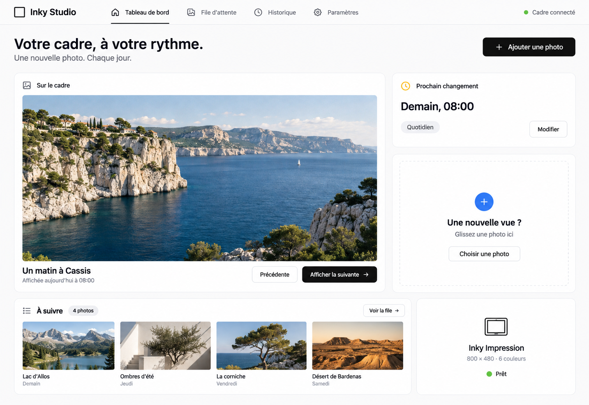
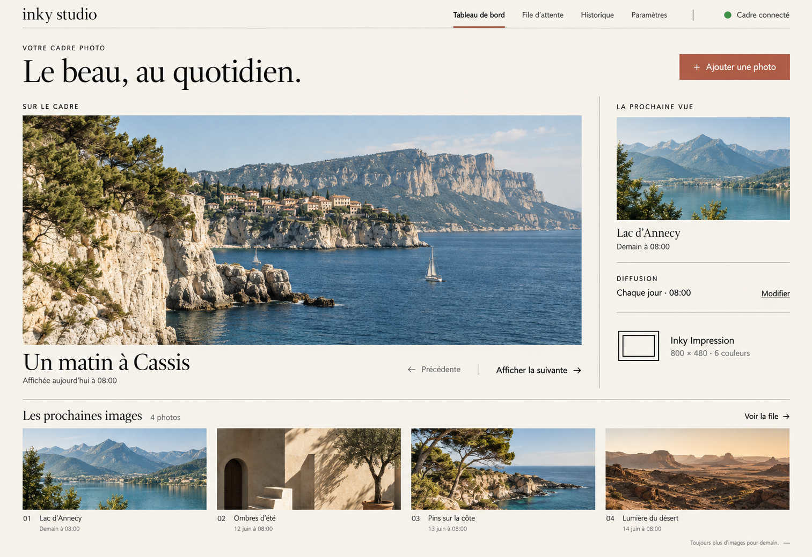
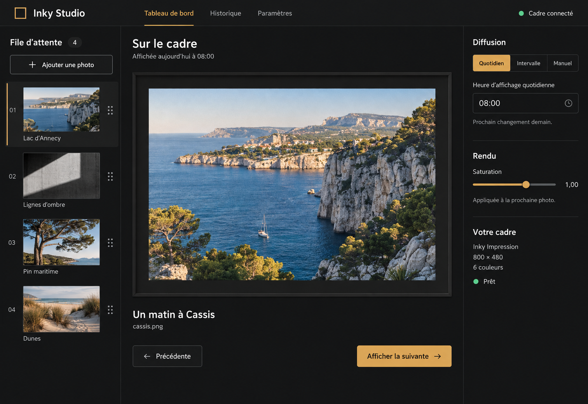

01 — Bento, blanc & noir
Des cartes aérées, une hiérarchie immédiate. Blanc dominant, boutons noirs et couleurs ponctuelles dans les icônes et les statuts.

02 — Galerie éditoriale
Une composition ouverte, un fond papier et une typographie élégante. La photographie domine, les réglages restent discrets.

03 — Studio, anthracite & ambre
Un espace de travail photographique : file verticale à gauche, image au centre et réglages à droite. Contrastes doux et accents ambre.
